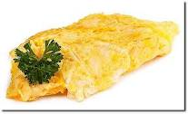
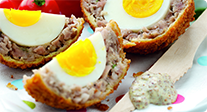

Recipes R Us
Omelette
The following recipe is for a plain folded omelette. For more recipes, visit BBC Good Foos
Ingredients
- 2-3 eggs
- 1 tbsp milk
- salt and pepper
-
- You can use other herbs
- Try parsley or chives
- knob butter for frying
Method
- Break the eggs into a bowl, adding milk, salt and pepper.
- beat the eggs gently with a for, just until the combine together. Do not over bear then or whisk them to a froth.
Scotch eggs
Ingredients
- 4 large eggs
- 6 sausages
-
- Use good quality ones where possible
- 60ml milk
- 45ml plain flour
- 100g fresh white breadcrumbs
- vegetable oil to cook
- 60ml low fat mayonnaise
- 30ml wholegrain mustard
Method
- Place 3 eggs in a small pan, cover with boiling water and bring to the boil. Cook for 6 mins. Meanwhile, mix the mayonnaise and mustard together and spoon into a small dish.
- Drain the eggs, rinse in cold water tapping the shells all over. When cool enough to handle peel away the shells. Heat the oil in a fryer or deep large pan to 160C/325F.
- Meanwhile, use a knife to cut the sausage skins and peel them away. Mix the sausagemeat together and divide into Beat the remaining egg with the milk and place in a shallow dish. Place the flour and breadcrumbs on plates.
- Flatten the sausagemeat, roll the boiled egg in flour then wrap the sausagemeat around the egg to make a neat egg shape. Roll the egg in the flour; dip in the beaten egg. then roll in the bread crumbs. Repeat dipping the egg in flour, egg and breadcrumbs.
- Use a slotted spoon to carefully lower the eggs into the hot fat and cook for 8 mins or until the eggs are golden on the outside (it's important that the oil is not too hot., so that the sausagemeat has a chance to cook though).
- Remove the egg from the hot fat and drain on kitchen paper. leave to cool. Serve warm or cold with salad and the mustard mayo.